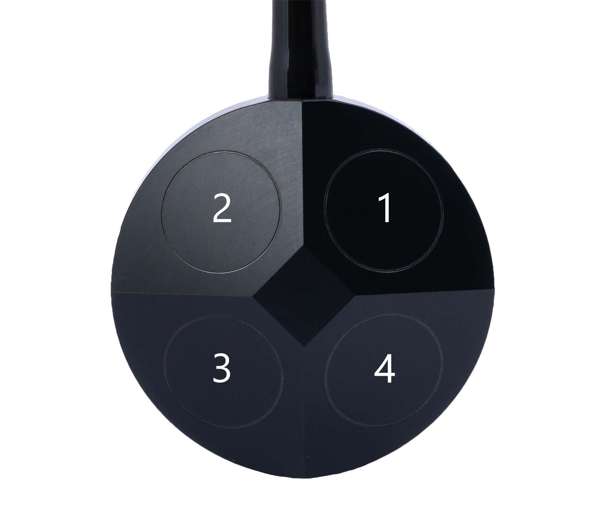

Protocol
Water Linked DVL protocol
Describes the Water Linked DVL protocols (serial and ethernet).
Terminology
- DVL - Doppler Velocity Log - Uses hydro-acoustic beams to measure the velocity at which the DVL is moving across a surface (typically an unmoving one such as the sea bottom), and the distance to this surface.
- ACK - Acknowledgement. The command issued was successful.
- NAK - Negative acknowledgement. The command issued failed.
- Ping - A pulse of sound sent by the DVL
- Time of validity - Timestamp of the surface reflection ('center of ping')
- Time of transmission - Timestamp taken directly before sending data over the serial or TCP protocols. The difference between time of transmission and time of validity includes both the time for the acoustic wave to travel from the surface from which it was reflected back to the DVL, and the decoding and processing of this signal internally in the DVL.
Version
This document describes serial protocol version 2.6.x (major.minor.patch) and JSON protocol json_v3.1 (major.minor):
- MAJOR version increments represent incompatible API changes
- MINOR version increments represent additional backwards-compatible functionality
- PATCH version increments represent backwards-compatible bug fixes
Version history overview
| Software release | Serial protocol version | Ethernet protocol version | Main protocol improvements |
|---|---|---|---|
| 2.6.1 | 2.6.0 | json_v3.1 | Serial baud rate configurable. Add PD4 protocol support in serial 'wcp' command. Some serial protocol names changed. |
| 2.5.2 | 2.5.0 | json_v3.1 | Add PD4 protocol support (experimental) |
| 2.4.4 | 2.5.0 | json_v3.1 | Change gyro calibration to store persistently. Note: gyro calibration commands now takes up to 15 seconds. |
| 2.4.0 | 2.5.0 | json_v3.1 | Add ability to trigger pings (JSON/Serial), add configuration for periodic cycling (JSON/Serial) |
| 2.2.1 | 2.4.0 | json_v3 | Add serial output protocol configuration, range mode configuration and calibrate gyro command, Fix missing line ending in configuration (JSON), fix dark mode enabled naming inconsistency (JSON), change speed of sound and mounting rotation offset from integer to float |
| 2.1.0 | 2.3.0 | json_v3 | Add configuration, add time_of_validity/time_of_transmission, add covariance (JSON) |
| 2.0.8 | 2.2.0 | json_v2 | Add position estimation, add IMU output |
| 1.6.0 | 2.1.0 | - | Initial (velocity only) |
JSON protocol (TCP)
Overview
The DVL supports sending velocity, transducer, and position updates using the Transmission Control Protocol (TCP). The DVL runs a TCP server on port 16171.
The format of each packet is JSON.
Velocity-and-transducer report
A velocity-and-transducer report is sent for each velocity calculation of the DVL. The rate depends on the altitude of the DVL (distance to the sea bottom or other reflecting surface), but will be in the range 2-15 Hz.
The X, Y, and Z axes are with respect to body frame of the DVL, or the vehicle frame if the DVL is mounted on a vehicle at an angle, specified as a 'mounting rotation offset', from the forward axis of the vehicle.
The messages are delimited by newline.
| Variable | Description |
|---|---|
| time | Milliseconds since last velocity report (ms) |
| vx | Velocity in x direction (m/s) |
| vy | Velocity in y direction (m/s) |
| vz | Velocity in z direction (m/s) |
| fom | Figure of merit, a measure of the accuracy of the velocities (m/s) |
| covariance | Covariance matrix for the velocities. The figure of merit is calculated from this (entries in (m/s)^2) |
| altitude | Distance to the reflecting surface along the Z axis (m) |
| transducers | Is a list containing information from each transducer: [id, velocity (m/s), distance (m), rssi (dBm), nsd (dBm), beam_valid (True/False)] |
| velocity_valid | If true, the DVL has a lock on the reflecting surface, and the altitude and velocities are valid (True/False) |
| status | 8 bit status mask. Bit 0 is set to 1 for high temperature and DVL will soon enter thermal shutdown. Remaining bits are reserved for future use. |
| time_of_validity | Timestamp of the surface reflection, aka 'center of ping' (Unix timestamp in microseconds) |
| time_of_transmission | Timestamp from immediately before sending of the report over TCP (Unix timestamp in microseconds) |
| format | Format type and version for this report: json_v3.1 |
| type | Report type: velocity |
Example of TCP report (indented for legibility)
{
"time": 106.3935775756836,
"vx": -3.713480691658333e-05,
"vy": 5.703703573090024e-05,
"vz": 2.4990416932269e-05,
"fom": 0.00016016385052353144,
"covariance": [
[
2.4471841442164077e-08,
-3.3937477272871774e-09,
-1.6659699175747278e-09
],
[
-3.3937477272871774e-09,
1.4654466085062268e-08,
4.0409570134514183e-10
],
[
-1.6659699175747278e-09,
4.0409570134514183e-10,
1.5971971523143225e-09
]
],
"altitude": 0.4949815273284912,
"transducers": [
{
"id": 0,
"velocity": 0.00010825289791682735,
"distance": 0.5568000078201294,
"rssi": -30.494251251220703,
"nsd": -88.73271179199219,
"beam_valid": true
},
{
"id": 1,
"velocity": -1.4719001228513662e-05,
"distance": 0.5663999915122986,
"rssi": -31.095735549926758,
"nsd": -89.5116958618164,
"beam_valid": true
},
{
"id": 2,
"velocity": 2.7863150535267778e-05,
"distance": 0.537600040435791,
"rssi": -27.180519104003906,
"nsd": -96.98075103759766,
"beam_valid": true
},
{
"id": 3,
"velocity": 1.9419496311456896e-05,
"distance": 0.5472000241279602,
"rssi": -28.006759643554688,
"nsd": -88.32147216796875,
"beam_valid": true
}
],
"velocity_valid": true,
"status": 0,
"format": "json_v3.1",
"type": "velocity",
"time_of_validity": 1638191471563017,
"time_of_transmission": 1638191471752336
}
Dead reckoning report
A dead reckoning report outputs the current speed, position, and orientation of the DVL as calculated by dead reckoning, with respect to a frame defined by the axes of the DVL's body frame, or vehicle frame if a mounting rotation offset is set, at the start of the dead reckoning run. The expected update rate is 5 Hz.
| Variable | Description |
|---|---|
| ts | Time stamp of report (Unix timestamp in seconds) |
| x | Distance in X direction (m) |
| y | Distance in Y direction (m) |
| z | Distance in downward direction (m) |
| std | Standard deviation (figure of merit) for position (m) |
| roll | Rotation around X axis (degrees) |
| pitch | Rotation around Y axis (degrees) |
| yaw | Rotation around Z axis, i.e. heading (degrees) |
| type | Report type: position_local |
| status | Reports if there are any issues with the DVL (0 if no errors, 1 otherwise) |
| format | Format type and version for this report: json_v3 |
Example of a dead reckoning report.
{
"ts": 49056.809,
"x": 12.43563613697886467,
"y": 64.617631152402609587,
"z": 1.767641898933798075,
"std": 0.001959984190762043,
"roll": 0.6173566579818726,
"pitch": 0.6173566579818726,
"yaw": 0.6173566579818726,
"type": "position_local",
"status": 0,
"format": "json_v3.1"
}
Reset dead reckoning
Dead reckoning can be reset by issuing the reset_dead_reckoning command:
{"command": "reset_dead_reckoning"}
If the request is successfully received the response will have 'success' set to 'true'. The dead reckoning will have a delay of approximately 50ms until the positioning values being zeroed out. If the response is unsuccessful, the 'success' will be 'false' and a non-empty describing text will be returned in 'error_message'.
{
"response_to":"reset_dead_reckoning",
"success": true,
"error_message": "",
"result": null,
"format": "json_v3.1",
"type": "response"
}
Calibrate gyro
The gyro can be calibrated by issuing the calibrate_gyro command:
{"command":"calibrate_gyro"}
The response will be as follows if the calibration is successful. If unsuccessful, success will be false, and a non-empty error_message will be provided.
{
"response_to": "calibrate_gyro",
"success": true,
"error_message": "",
"result": null,
"format": "json_v3.1",
"type": "response"
}
Trigger ping
In setups where multiple acoustic sensors are used it can be useful to control the pinging of each acoustic sensor individually. By setting the configuration acoustic_enabled = false the pinging of the DVL can be externally controlled. Up to 15 external trigger commands can be queued by issuing the trigger_ping command. The DVL will execute each ping in quick succession until no more commands are in the queue.
{"command":"trigger_ping"}
The response will be as follows if the calibration is successful. If queue is full, success will be false, and a non-empty error_message will be provided.
{
"response_to": "trigger_ping",
"success": true,
"error_message": "",
"result": null,
"format": "json_v3.1",
"type": "response"
}
Configuration over JSON
Configuration parameters
| Variable | Description |
|---|---|
| speed_of_sound | Speed of sound (1000-2000 m/s). Integer |
| mounting_rotation_offset | See the definition of the vehicle frame of the DVL. Typically 0, but can be set to be non-zero if the forward axis of the DVL is not aligned with the forward axis of a vehicle on which it is mounted (0-360 degrees). Integer |
| acoustic_enabled | true for normal operation of the DVL,false when the sending of acoustic waves from the DVL is disabled (e.g. to save power or slow down its heating up in air) |
| dark_mode_enabled | false when the LED operates as normal, true for no blinking of the LED (e.g. if the LED is interfering with a camera) |
| range_mode | auto when operating as normal, otherwise see range mode configuration |
| periodic_cycling_enabled | true for normal operation where the DVL periodically searches for bottom lock shorter than the existing bottom lock, false if periodic cycling is disabled |
Fetching current configuration
The current configuration of the DVL can be obtained by issuing the get_config command:
{"command": "get_config"}
If the configuration is successfully fetched, the response will be in the following format. If not, success will be false, a non-empty error_message string will be provided, and result will be null.
{
"response_to":"get_config",
"success":true,
"error_message":"",
"result":{
"speed_of_sound":1475.00,
"acoustic_enabled":true,
"dark_mode_enabled":false,
"mounting_rotation_offset":20.00,
"range_mode":"auto",
"periodic_cycling_enabled":true
},
"format":"json_v3.1",
"type":"response"
}
Setting configuration parameters
Setting of configuration parameters can be carried out by issuing a set_config in the following format, including those parameters which are to be set:
{"command":"set_config","parameters":{"speed_of_sound":1480}}
If the parameters are successfully set, the response will be in the following format. If not, success will be false, and a non-empty error_message string will be provided.
{
"response_to": "set_config",
"success": true,
"error_message": "",
"result" :null,
"format": "json_v3.1",
"type": "response"
}
Serial Protocol
Overview
The default serial communication format is 115200 8-N-1 (no hardware flow control). Release 2.6.1 and later allow different baud rates through GUI configuration.
Packets sent to and received from the DVL start with a w and end with LF, CR+LF, or CR. The packet format is:
| Start byte | Direction | Command | Options (0 to many) | Checksum | End byte |
|---|---|---|---|---|---|
w |
c or r |
x |
,[option] |
*xx |
\n, \r\n, or \r |
Direction is c (short for 'command') for packets sent to the DVL, and r (short for 'response') for packets sent from the DVL.
The commands can be sent from a terminal program that supports sending a full line at a time. The timeout between characters is approximately 10 ms.
Note
Please verify the baud rate configuration in the GUI if you are unable to communicate with the default baud rate.
Note
The checksum is optional when sending commands to the DVL. The DVL always returns a checksum. The checksum algorithm
is CRC-8 and it is formatted as a hexadecimal number using 2 lower-case characters (ex: *c3). See below for details.
Command overview
The commands in the table are shown without the checksum and without the mandatory line ending (any of \n, \r\n, or \r) for readability. In all cases, the response to a submitted command may be wrn, wr?, or wr! (see below for details), but only the format of a successful response is listed.
| Command | Description | Response | Description |
|---|---|---|---|
wcv |
Get protocol version | wrv,[major],[minor],[patch] |
Protocol version. eg: wrv,2.5.0 |
wcw |
Get product detail | wrw,[name],[version],[chipID],[IP address] |
Where type is dvl, name is product name, version is software version, chip ID is the chip ID and optionally the IP address if connected to DHCP server: eg: wrw,dvl-a50,2.2.1,0xfedcba98765432 or wrw,dvl-a50,2.2.1,0xfedcba98765432,10.11.12.140 |
wcs,[configuration parameters] |
Set configuration parameters | wra |
Successfully set the specified configuration parameters. See Configuration for details |
wcc |
Get current configuration | wrc,[configuration parameters] |
Entire current configuration. See Configuration for details |
wcr |
Reset dead reckoning | wra |
Successfully started a new dead reckoning run |
wcx |
Trigger ping | wra |
Successfully queued a ping |
wcg |
Calibrate gyro | wra |
Successfully calibrated gyro |
wcp |
Change serial output protocol | wra |
Successfully changed output protocol |
wrz,[details below] |
Velocities calculated | ||
wru,[details below] |
Transducer information | ||
wrp,[details below] |
Dead reckoning report | ||
wrx,[details below] |
DEPRECATED: Velocities calculated (old format) | ||
wrt,[details below] |
DEPRECATED: Transducer information (old format) | ||
wr? |
Malformed request: packet cannot be understood or no newline received before timeout | ||
wr! |
Malformed request: packet does not match the given checksum | ||
wrn |
Not acknowledged (nack): an error occurred when handling the packet |
Velocity report (wrz)
A velocity report is outputted for each velocity calculation of the DVL. The rate depends on the altitude of the DVL (distance to the sea bottom or other reflecting surface), but will be in the range 2-15 Hz.
The X, Y, and Z axes are with respect to body frame of the DVL, or the vehicle frame if the DVL is mounted on a vehicle at an angle, specified as a 'mounting rotation offset', from the forward axis of the vehicle.
The report has the following format:
wrz,[vx],[vy],[vz],[valid],[altitude],[fom],[covariance],[time_of_validity],[time_of_transmission],[time],[status]
| Variable | Description |
|---|---|
| vx | Velocity in x direction (m/s) |
| vy | Velocity in y direction (m/s) |
| vz | Velocity in z direction (m/s) |
| valid | If y, the DVL has a lock on the reflecting surface, and the altitude and velocities are valid (y/n) |
| altitude | Measured altitude to the bottom (m) |
| fom | Figure of merit, a measure of the accuracy of the velocities (m/s) |
| covariance | Covariance matrix for the velocities. The figure of merit is calculated from this. 9 entries ((m/s)^2) separated by ; |
| time_of_validity | Timestamp of the surface reflection, aka 'center of ping' (Unix timestamp in microseconds) |
| time_of_transmission | Timestamp from immediately before sending of the report over TCP (Unix timestamp in microseconds) |
| time | Milliseconds since last velocity report (ms) |
| status | 8 bit status mask. Bit 0 is set to 1 for high temperature and DVL will soon enter thermal shutdown. Remaining bits are reserved for future use. |
Example where all velocities are valid:
wrz,0.120,-0.400,2.000,y,1.30,1.855,1e-07;0;1.4;0;1.2;0;0.2;0;1e+09,7,14,123.00,1*50
Transducer report (wru)
A transducer report is outputted for each of the four transducers of the DVL for each velocity calculation of the DVL. The rate will be the same as that of the velocity report. If the transducer did not receive a signal which could be successfully decoded, distance will be set to -1, and velocity will be set to 0. RSSI and NSD will be outputted in all cases.
The report has the following format:
wru,[id],[velocity],[distance],[rssi],[nsd]
| Variable | Description |
|---|---|
| id | Transducer number |
| velocity | Velocity in the direction of the transducer (m/s) |
| distance | Distance (parallel to the transducer beam, i.e. not the vertical distance) to the reflecting surface from this transducer (m) |
| rssi | Received signal strength indicator: strength of the signal received by this transducer (dBm) |
| nsd | Noise spectral density: strength of the background noise received by this transducer (dBm) |
Example where all data is valid:
wru,0,0.070,1.10,-40,-95*9c
wru,1,-0.500,1.25,-62,-104*f0
wru,2,2.200,1.40,-56,-98*18
wru,3,1.800,1.35,-58,-96*a3
Dead reckoning report (wrp)
A dead reckoning report outputs the current speed, position, and orientation of the DVL as calculated by dead reckoning, with respect to a frame defined by the axes of the DVL's body frame, or vehicle frame if a mounting rotation offset is set, at the start of the dead reckoning run. The expected update rate is 5 Hz.
The format is:
wrp,[time_stamp],[x],[y],[z],[pos_std],[roll],[pitch],[yaw],[status]
| Variable | Description |
|---|---|
| time_stamp | Time stamp of report (Unix timestamp in seconds) |
| x | Distance in X direction (m) |
| y | Distance in Y direction (m) |
| z | Distance in downward direction (m) |
| pos_std | Standard deviation (Figure of merit) for position (m) |
| roll | Rotation around X axis (degrees) |
| pitch | Rotation around Y axis (degrees) |
| yaw | Rotation around Z axis, i.e. heading (degrees) |
| status | Reports if there are any issues with the DVL (0 if no errors, 1 otherwise) |
Example:
wrp,49056.809,0.41,0.15,1.23,0.4,53.9,13.0,19.3,0*de
wrp,49057.269,0.39,0.18,1.23,0.4,53.9,13.0,19.3,0*e2
Reset dead reckoning (wcr)
Dead reckoning can be reset by issuing the wcr command. The reply will be an ack (wra) if the reset is successful, and a nak (wrn) if not.
Calibrate gyro (wcg)
The gyro can be calibrated by issuing the wcg command. The reply will be an ack (wra) if the reset is successful, and a nak (wrn) if not.
Trigger ping (wcx)
In setups where multiple acoustic sensors are used it can be useful to control the pinging of each acoustic sensor individually. By setting the configuration acoustic_enabled = n the pinging of the DVL can be externally controlled. Up to 15 external trigger commands can be queued by issuing the wcx command. The DVL will execute each ping in quick succession until no more commands are in the queue.
The reply will be an ack (wra) if the command is successful, and a nak (wrn) if queue is full.
Change serial output protocol (wcp)
The serial output protocol in use can configured by issuing the wcp command. The selected protocol is persistent over reboots.
wcp,[protocol number]
The supported protocols are:
| Protocol number | Name | Description |
|---|---|---|
| 0 | Output disabled | No output on serial. Recommended if serial port is not used to lower latency on ethernet protocols. |
| 1 | WL - Serial V1 and V2 | All output including the deprecated wrx and wrt sentences. |
| 2 | PD6 | PD6 protocol output. See PD6 protocol description |
| 3 | WL - Serial V2 | All output excluding the deprecated wrx and wrt sentences. |
| 4 | Not used | Not used |
| 5 | Not used | Not used |
| 6 | PD4 | PD4 protocol output See PD4 protocol description |
The reply will be an ack (wra) if the protocol change is successful, and a nak (wrn) if not.
Example setting configuring output to use protocol number 3:
wcp,3
Note
Prior to release 2.6.1 protocol number 1 was named Backward compatible and protocol number 3 was named Latest. There is no change in functionality.
Configuration over serial
Configuration parameters
| Variable | Description |
|---|---|
| speed_of_sound | Speed of sound (1000-2000 m/s). Float |
| mounting_rotation_offset | See the definition of the vehicle frame of the DVL. Typically 0, but can be set to be non-zero if the forward axis of the DVL is not aligned with the forward axis of a vehicle on which it is mounted (0-360 degrees). Float |
| acoustic_enabled | y for normal operation of the DVL,n when the sending of acoustic waves from the DVL is disabled (e.g. to save power or slow down its heating up in air) |
| dark_mode_enabled | n when the LED operates as normal. y for no blinking of LED (e.g. if the LED is interfering with a camera) |
| range_mode | auto when operating as normal, otherwise see range mode configuration |
| periodic_cycling_enabled | y when operating as normal, otherwise n. See Configuration over JSON for details |
Note
For backward compatibility the range_mode and periodic_cycling_enabled parameters are optional when setting the configuration. They will always be returned when reading the configuration (wcc).
Speed of sound and mounting rotation was changed from integer to float in serial protocol 2.4.0
Fetching current configuration
The current configuration of the DVL can be obtained by issuing the wcc command.
If the configuration is successfully fetched, the response will be in the following format. If not, a nak wrn will be returned.
wrc,[speed_of_sound],[mounting_rotation_offset],[acoustic_enabled],[dark_mode_enabled],[range_mode],[periodic_cycling_enabled]
Setting configuration parameters
Setting of configuration parameters can be carried out by issuing the wcs command in the following format.
wcs,[speed_of_sound],[mounting_rotation_offset],[acoustic_enabled],[dark_mode_enabled],[range_mode],[periodic_cycling_enabled]
Those parameters which are not to be set can be left blank.
Example for setting dark mode without changing the other parameters:
wcs,,,,y,,
Example for setting speed of sound to 1450 m/s and disabling acoustics, without changing the other parameters:
wcs,1450,,n,,,
The response will be an ack wra if the parameters are successfully set, a nak wrn if the command was successfully parsed but the parameters were not successfully set, and a malformed request wr? if the command was not successfully parsed, e.g. if the wrong number of parameters was used, or either speed_of_sound or mounting_rotation_offset was not an integer.
The new configuration will not be returned in the response, but can be obtained by issuing a wcc command as above.
Velocity report, old format (wrx) [Deprecated]
Same purpose as the velocity report, but in an older format:
wrx,[time],[vx],[vy],[vz],[fom],[altitude],[valid],[status]
| Variable | Description |
|---|---|
| time | Milliseconds since last velocity report (ms) |
| vx | Velocity in x direction (m/s) |
| vy | Velocity in y direction (m/s) |
| vz | Velocity in z direction (m/s) |
| fom | Figure of merit, a measure of the accuracy of the velocities (m/s) |
| altitude | Distance to the reflecting surface along Z axis (m) |
| valid | If y, the DVL has lock on the reflecting surface, and the altitude and velocities are valid (y/n) |
| status | 8 bit status mask. Bit 0 is set to 1 for high temperature and DVL will soon enter thermal shutdown. Remaining bits are reserved for future use. |
Example where velocities are valid:
wrx,112.83,0.007,0.017,0.006,0.000,0.93,y,0*d2
wrx,140.43,0.008,0.021,0.012,0.000,0.92,y,0*b7
wrx,118.47,0.009,0.020,0.013,0.000,0.92,y,0*54
Example where velocities and altitude are not valid and a high temperature warning occurs:
wrx,1075.51,0.000,0.000,0.000,2.707,-1.00,n,1*04
wrx,1249.29,0.000,0.000,0.000,2.707,-1.00,n,1*6a
wrx,1164.94,0.000,0.000,0.000,2.707,-1.00,n,1*39
Transducer report, old format (wrt) [Deprecated]
Same purpose as the transducer report, but in an older format, and combining the data of all four transducers:
wrt,[dist_1],[dist_2],[dist_3],[dist_4]
| Variable | Description |
|---|---|
| dist_1 | Distance (parallel to the transducer beam, i.e. not the vertical distance) to reflecting surface from transducer 1 (m) |
| dist_2 | Distance to reflecting surface from transducer 2 (m) |
| dist_3 | Distance to reflecting surface from transducer 3 (m) |
| dist_4 | Distance to reflecting surface from transducer 4 (m) |
Example where all distances are valid:
wrt,15.00,15.20,14.90,14.20*b1
wrt,14.90,15.10,14.80,14.10*ac
Example where distance is not valid for transducer 4:
wrt,14.90,15.10,14.80,-1.00*53
wrt,15.00,15.20,14.90,-1.00*71
Checksum
The checksum algorithm is CRC-8 (Polynomal: 0x07, Init: 0x00, RefIn/RefOut: false, XorOut: 0x00, Check: 0xf4).
Checksum is formatted as a hexadecimal number using 2 lower-case characters (ex: *c3).
Compatible implementations:
- Python 3: crcmod
crcmod.predefined.mkPredefinedCrcFun("crc-8") - Golang: github.com/sigurn/crc8
crc8.MakeTable(crc8.CRC8)
Example for how to verify checksum using Python 3 and crcmod:
crc = crcmod.predefined.mkPredefinedCrcFun("crc-8")
sentence = b"wrx,1164.94,0.000,0.000,0.000,2.707,-1.00,n,1*39"
data, checksum = sentence.split(b"*")
if crc(data) == int(checksum, 16):
print("CRC valid")
else:
print("CRC invalid")
The crcmod python package can generate code in other languages. Here is an example (subject to the MIT License) for C which should be straightforward to adapt to other languages.
static const uint8_t lookup_table[256] = {
0x00U,0x07U,0x0EU,0x09U,0x1CU,0x1BU,0x12U,0x15U,
0x38U,0x3FU,0x36U,0x31U,0x24U,0x23U,0x2AU,0x2DU,
0x70U,0x77U,0x7EU,0x79U,0x6CU,0x6BU,0x62U,0x65U,
0x48U,0x4FU,0x46U,0x41U,0x54U,0x53U,0x5AU,0x5DU,
0xE0U,0xE7U,0xEEU,0xE9U,0xFCU,0xFBU,0xF2U,0xF5U,
0xD8U,0xDFU,0xD6U,0xD1U,0xC4U,0xC3U,0xCAU,0xCDU,
0x90U,0x97U,0x9EU,0x99U,0x8CU,0x8BU,0x82U,0x85U,
0xA8U,0xAFU,0xA6U,0xA1U,0xB4U,0xB3U,0xBAU,0xBDU,
0xC7U,0xC0U,0xC9U,0xCEU,0xDBU,0xDCU,0xD5U,0xD2U,
0xFFU,0xF8U,0xF1U,0xF6U,0xE3U,0xE4U,0xEDU,0xEAU,
0xB7U,0xB0U,0xB9U,0xBEU,0xABU,0xACU,0xA5U,0xA2U,
0x8FU,0x88U,0x81U,0x86U,0x93U,0x94U,0x9DU,0x9AU,
0x27U,0x20U,0x29U,0x2EU,0x3BU,0x3CU,0x35U,0x32U,
0x1FU,0x18U,0x11U,0x16U,0x03U,0x04U,0x0DU,0x0AU,
0x57U,0x50U,0x59U,0x5EU,0x4BU,0x4CU,0x45U,0x42U,
0x6FU,0x68U,0x61U,0x66U,0x73U,0x74U,0x7DU,0x7AU,
0x89U,0x8EU,0x87U,0x80U,0x95U,0x92U,0x9BU,0x9CU,
0xB1U,0xB6U,0xBFU,0xB8U,0xADU,0xAAU,0xA3U,0xA4U,
0xF9U,0xFEU,0xF7U,0xF0U,0xE5U,0xE2U,0xEBU,0xECU,
0xC1U,0xC6U,0xCFU,0xC8U,0xDDU,0xDAU,0xD3U,0xD4U,
0x69U,0x6EU,0x67U,0x60U,0x75U,0x72U,0x7BU,0x7CU,
0x51U,0x56U,0x5FU,0x58U,0x4DU,0x4AU,0x43U,0x44U,
0x19U,0x1EU,0x17U,0x10U,0x05U,0x02U,0x0BU,0x0CU,
0x21U,0x26U,0x2FU,0x28U,0x3DU,0x3AU,0x33U,0x34U,
0x4EU,0x49U,0x40U,0x47U,0x52U,0x55U,0x5CU,0x5BU,
0x76U,0x71U,0x78U,0x7FU,0x6AU,0x6DU,0x64U,0x63U,
0x3EU,0x39U,0x30U,0x37U,0x22U,0x25U,0x2CU,0x2BU,
0x06U,0x01U,0x08U,0x0FU,0x1AU,0x1DU,0x14U,0x13U,
0xAEU,0xA9U,0xA0U,0xA7U,0xB2U,0xB5U,0xBCU,0xBBU,
0x96U,0x91U,0x98U,0x9FU,0x8AU,0x8DU,0x84U,0x83U,
0xDEU,0xD9U,0xD0U,0xD7U,0xC2U,0xC5U,0xCCU,0xCBU,
0xE6U,0xE1U,0xE8U,0xEFU,0xFAU,0xFDU,0xF4U,0xF3U,
};
uint8_t crc8(uint8_t *message, int message_length) {
uint8_t checksum = 0;
while (message_length > 0) {
checksum = lookup_table[*message ^ checksum];
message++;
message_length--;
}
return checksum;
}
PD6 protocol (TCP/Serial)
Overview
The PD6 support allows for integration with equipment that may already have a PD6 protocol interface, removing the necessity to create a driver based on the standard Water Linked protocol. PD6 protocol is supported for output via serial and ethernet. PD6 protocol over TCP is always enabled. The port in use is configurable in the GUI. The default port is TCP 1037. The serial output can be configured to output PD6 using the Change serial output protocol command.
Command overview
Sentences TS, BI and BD are filled with relevant numbers. All other sentences are set to zero values.
Timing and scaling data (TS)
:TS,YYMMDDHHmmsshh,SS.S,+TT.T,DDDD.D,CCCC.C,BBB <CR><LF>
| Field | Explanation | Value |
|---|---|---|
| YYMMDDHHmmsshh | Year, month, day, hour, minute, second, hundredths of seconds | Report timestamp |
| SS.S | Salinity in parts per thousand (ppt). | Always 0 |
| DDDD.D | Depth of transducer face in meters. | Always 0 |
| CCCC.C | Speed of sound in meters per second. | Configured speed of sound |
| BBB | Built-in Test (BIT) result code. | Always 0 |
Bottom track, instrument referenced velocity data (BI)
:BI,±XXXXX,±YYYYY,±ZZZZZ,±EEEEE,S <CR><LF>
| Field | Explanation | Value |
|---|---|---|
| ±XXXXX | X-axis velocity data in mm/s | Current speed |
| ±YYYYY | Y-axis velocity data in mm/s | Current speed |
| ±ZZZZZ | Z-axis velocity data in mm/s | Current speed |
| ±EEEEE | Error in velocity data in mm/s | Current error |
| S | Status of velocity | A = good. V = bad |
Note
Axis used in the BI sentence is the vehicle frame.
Bottom track, earth referenced distance data (BD)
:BD,±EEEEEEEE.EE,±NNNNNNNN.NN,±UUUUUUUU.UU,DDDD.DD,TTT.TT <CR><LF>
| Field | Explanation | Value |
|---|---|---|
| ±EEEEEEEE.EE | East distance in meters. | Always 0 |
| ±NNNNNNNN.NN | North distance in meters. | Always 0 |
| ±UUUUUUUU.UU | Upward distance in meters. | Always 0 |
| DDDD.DD | Range to bottom in meters | Current altitude |
| TTT.TT | Time since last good velocity estimate in seconds. | Always 0 |
Bottom track, ship referenced distance data (BS)
- In the 2.4.0 software release the BS values are always zero.
- As of the 2.4.4 software release the BS values are given by the actual velocity.
:BS,±TTTTTTTT.TT,±LLLLLLLL.LL,±NNNNNNN.NN,S <CR><LF>
| Field | Explanation | Value |
|---|---|---|
| ±TTTTTTTT.TT | Transverse movement, (+ = Port to Starboard velocity relative to bottom) In mm/s | Y axis velocity |
| ±LLLLLLLL.LL | Longitudinal movement. (+ = Aft to Forward velocity relative to bottom) In mm/s | X axis velocity |
| ±NNNNNNN.NN | Ship velocity away from bottom in mm/s | Z axis velocity |
| S | Status of velocity | A = good. V = bad |
Example output
:SA, +0.00, +0.00, 0.00
:TS,22020812061800, 0.0, +0.0, 0.0,1475.0, 0
:WI, +0, +0, +0, +0,V
:WS, +0, +0, +0,V
:WE, +0, +0, +0,V
:WD, +0.00, +0.00, +0.00, 0.00, 0.00
:BI, +123, -420, +2000, +0,A
:BS, -420, +123, +2000,A
:BE, +0, +0, +0,V
:BD, +0.00, +0.00, +0.00, 5.32, 0.00
Range mode configuration
Range mode configuration can be used to instruct the DVL to only search for bottom lock in a limited altitude range. This can improve performance when operating in environments where you know the DVL minimum and/or maximum altitude. (Eg when operating in a river or pool)
The format for configuring range mode can be as follows:
| Range specifier | Behavior |
|---|---|
auto |
The DVL will search for bottom lock in it's full operational area (Default) |
=a |
The DVL is locked to range mode a where b is a number from 0-4 |
a<=b |
The DVL will search for bottom lock within range mode a and b |
The available range modes are:
| Range mode | Lower altitude (m) | Upper altitude (m) | Update rate per second (Hz) |
|---|---|---|---|
| 0 | 0.05 | 0.6 | 15 |
| 1 | 0.3 | 3.0 | 10 |
| 2 | 1.5 | 14 | 1 - 6 |
| 3 | 7.7 | 36 | 7 - 8 |
| 4 | 15 | max | 2 - 4 |
Examples:
=3The DVL will search for bottom lock between 7.7 and 36m2<=3The DVL will search for bottom lock between 1.5 and 36m
PD4 protocol (TCP/Serial)
Overview
The PD4 string is intended for use with equipment that may already have a PD4 protocol interface, removing the necessity to create a driver based on the standard Water Linked protocol. PD4 protocol is supported for output via serial and ethernet. The PD4 protocol over TCP is always enabled. The port in use is configurable in the GUl. The default port is TCP 1038.
Note
PD4 support was added in software release 2.5.2 and is experimental. Please give feedback on this feature.
Data Format
PD4 is a binary protocol where fields are defined by their position in one message. Data fields which use more than one byte are LittleEndian encoded.
| Byte(s) | Data type | used | Unit |
|---|---|---|---|
| 0 | DVL Data ID 7Dh | y | |
| 1 | Data structure ( Always equal to 0) | y | |
| 2,3 | Number of bytes | y | |
| 4 | System Config (0x101000111) | y | |
| 5,6 | X velocity bottom | y | mm/s |
| 7,8 | Y velocity bottom | y | mm/s |
| 9,10 | Z velocity bottom | y | mm/s |
| 11,12 | E velocity bottom | y | mm/s |
| 13,14 | BM1 range to bottom | y | cm |
| 15,16 | BM2 range to bottom | y | cm |
| 17,18 | BM3 range to bottom | y | cm |
| 19,20 | BM4 range to bottom | y | cm |
| 21 | Bottom status | y | bool |
| 22,23 | X-Velocity reference layer | n | |
| 24,25 | Y-Velocity reference layer | n | |
| 26,27 | Z-Velocity reference layer | n | |
| 28,29 | E-Velocity reference layer | n | |
| 30,31 | Reference layer start | n | |
| 32,33 | Reference layer end | n | |
| 34 | Reference layer status | n | |
| 35 | Time of first ping - hour | y | hours |
| 36 | Time of first ping - minute | y | minutes |
| 37 | Time of first ping - second | y | seconds |
| 38 | Time of first ping - hundreths | y | centi-seconds |
| 39,40 | Bit result | n | |
| 41,42 | Speed of Sound | y | m/s |
| 43,44 | Temperature | n | |
| 45,46 | Checksum | y | N/A |
Notes
To use the BM1-BM4 correctly you should use this translation. The numbering comes from the Transducer numbering (see image below) BM1 is transducer 3 BM2 is transducer 1 BM3 is transducer 4 BM4 is transducer 2 
-
Tells that the velocities are in ship coordinates, Tilt is used, Three beam not computed, and 600 Khz ↩